Retmetro.nl bezoekt New York Transit Subway...
- dinsdag 02 december 2008 21:16
- Geschreven door Rodney
Onlangs bezocht Retmetro.nl de New York Transit Subway. Met 26 metrolijnen, 1100 kilometer dienstspoor, 6.285 metrowagons, 490 metrostations, gemiddeld 7,1 miljoen reizigers per dag en 46.841 werknemers is de New York Subway het grootste metronetwerk ter wereld. De metro rijdt op en onder Manhattan, Brooklyn, Queens en de Bronx. Ook de Staten Island Railway op Staten Island maakt deel uit van de New York Subway.
De eerste metrolijn werd geopend in 1904. In de jaren daarop groeide het metronet met de stad en werd het de meest belangrijke vorm van openbaar vervoer. In New York rijden de metro's 24 uur per dag, maar 's nachts wel met een meer beperkte dienstregeling. Als aanvulling op het metronet zijn er ook 243 buslijnen, er zijn 4.694 bussen. Bij elkaar vormen metro en bus een zeer dicht netwerk van openbaar vervoer, waarvan New York niet meer zonder kan.
 Zie ook: Retmetro.nl bezoekt London Underground (2004)
Zie ook: Retmetro.nl bezoekt London Underground (2004)
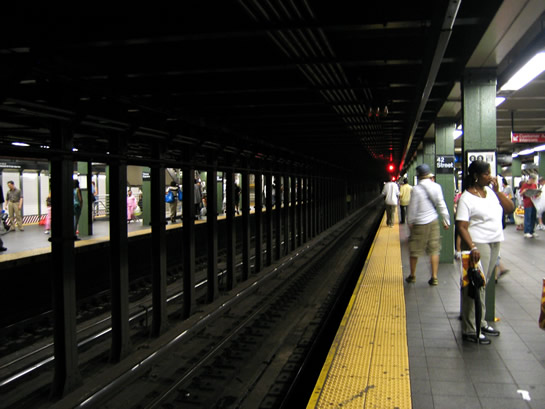
Station 42th Street/Times Square, wachtende op de metro.

Serie R62/R62A op station 18th Street, rijdende op lijn 3.
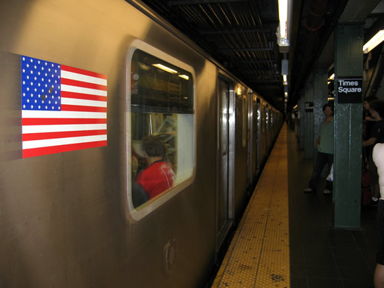
Serie R142/R142A op station 42th Street/Times Square, rijdende op lijn 2.
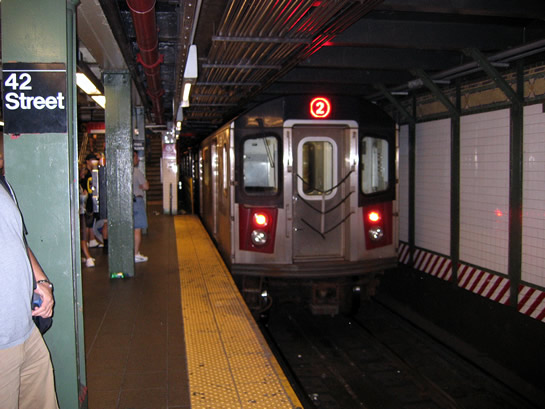
Nog een keer serie R142/R142A op station 42th street/Times Square, rijdende op lijn 2.
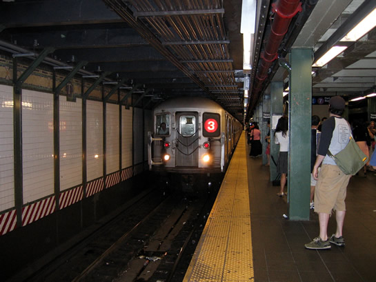
Serie R62/R62A op station 42th Street/Times Square, rijdende op lijn 3.
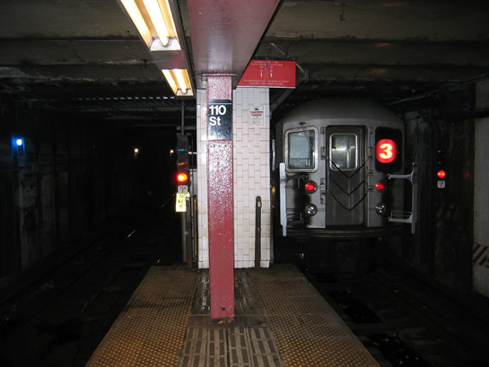
Serie R62/R62A op station 110th street (Central Park North), rijdende op lijn 3.
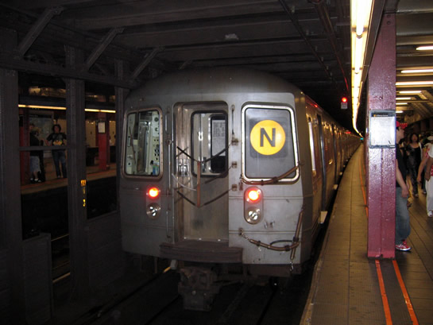
Serie R68/R68A op 42th Street/Times Square, rijdende op lijn N.
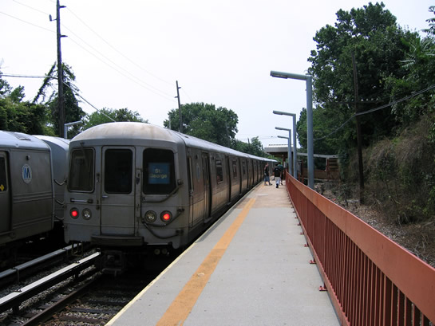
Serie R44/R46 op station Oldtown, rijdende op de Staten Island-Express.
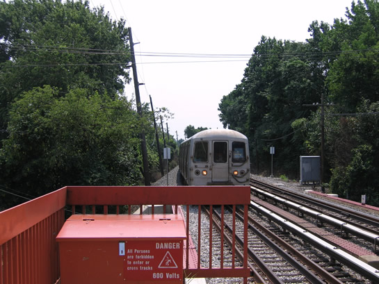
Serie R44/R46 op station Oldtown, rijdende op de Staten Island-Express.
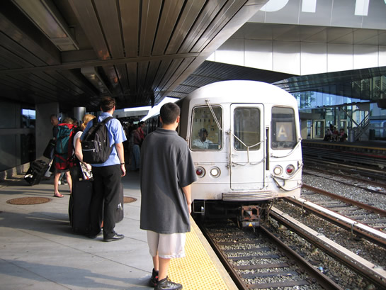
Serie R44/R46 op station Howard Beach-JFK Airport, rijdende op lijn A, de langste lijn.
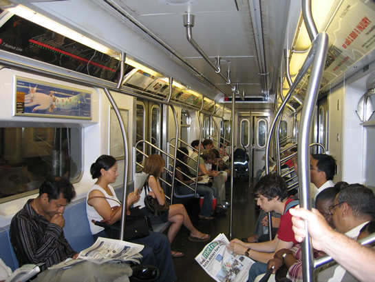
Interieur van serie R142/R142A.
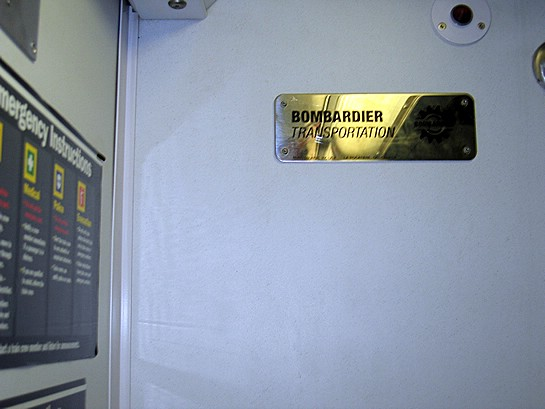
De nieuwste serie van de R142/R142A (1060 wagens), zijn gemaakt door Bombardier Transportation en zijn per schip in New York afgeleverd.
 Zie voor meer informatie over de rijtuigen: www.nycsubway.org (let op: website Engelstalig)
Zie voor meer informatie over de rijtuigen: www.nycsubway.org (let op: website Engelstalig)
De "MetroCard"
Het kaartje is een deels vergelijkbaar systeem als onze OV-Chipkaart; het systeem is niet contactloos, maar werkt wel met een vergelijkbaar systeem van in- en uitchecken. Het kaartje is gemaakt van stevig karton met een plastic laagje er omheen. De kaart is verkrijgbaar in een 1-ritkaart, 1-dagkaart, 7-dagenkaart, 30-dagenkaart en Airportkaarten die je kunt gebruiken voor als je naar de vliegvelden reist. Je kunt het saldo van de MetroCard opwaarderen zodat je weer meer ritten kunt rijden. De kaarten kunnen ook gebruikt worden in de New York Transit Bussen, en in de PATH System, een metro tussen New York en New Jersey die geëxploiteerd wordt door de New York Port Authority en New Jersey. Passagiers met een abonnement moeten eens per 30 dagen de kaart opwaarderen om weer met de metro te kunnen rijden, de kosten hiervoor bedragen 30 dollar (22,50 euro).
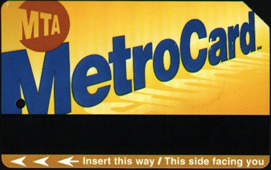
De MetroCard.
 Zie voor meer informatie over de prijzen en de MTA: www.mta.nyc.ny.us (let op: website Engelstalig)
Zie voor meer informatie over de prijzen en de MTA: www.mta.nyc.ny.us (let op: website Engelstalig)